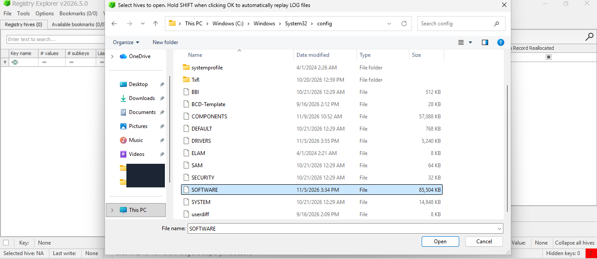
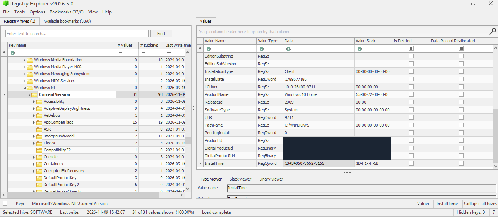
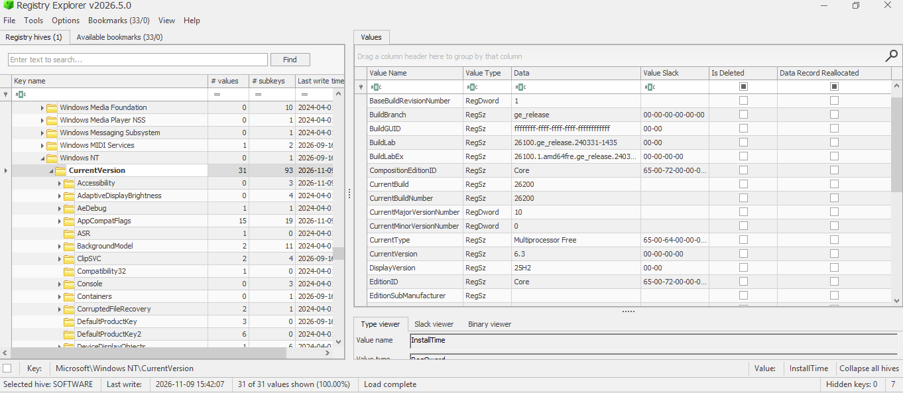
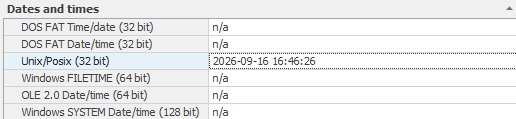
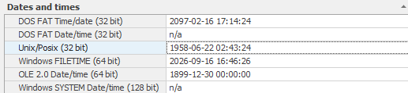
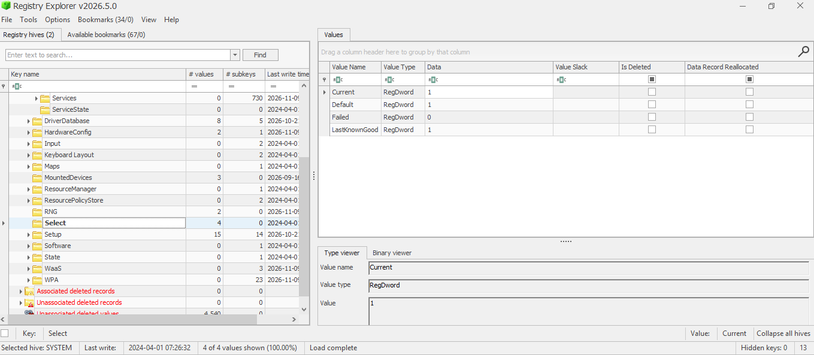
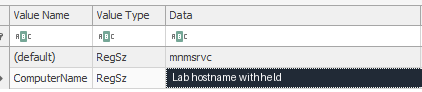

DFIR / LAB 01 / WINDOWS FORENSICS
Profiling a Windows Host with Registry Explorer
Before building an incident timeline, the examiner needs to know which Windows installation the evidence describes and which computer name it records. This lab uses the SOFTWARE and SYSTEM hives from a Windows VM to establish that baseline and show where it needs corroboration.
Windows 11 lab VM · Registry Explorer 2026.5.0
1. Locate the registry hives
A disk image may arrive with little context beyond an evidence label. Reading the registry gives the examiner a way to check what the image itself contains before attributing events to a device. It also helps narrow the search to artifacts relevant to the Windows build and the period under investigation.
In this lab the source was a Windows VM. The hives were located under C:\Windows\System32\config. The examination started with SOFTWARE for the version and installation values, then moved to SYSTEM for the configured computer name.


System32\config directory. Select a screenshot to open it at full size.2. Validate the Windows release
Under SOFTWARE\Microsoft\Windows NT\CurrentVersion, ProductName read Windows 10 Home and ReleaseId read 2009. The same key recorded 25H2 in DisplayVersion and 26200 in both CurrentBuild and CurrentBuildNumber.


ProductName and ReleaseId in CurrentVersion.

26200 and display version 25H2 in the same key.Microsoft’s release table maps build 26200 to Windows 11 25H2. That is consistent with DisplayVersion and the lab environment. The conflicting strings remain part of the record; the edition was not independently confirmed. In triage, using the build to guide artifact selection avoids sending the examination down the wrong path based on a product label alone.
3. Decode and compare the installation timestamps
With the Windows release established, the next step was to interpret the two installation values in the same key. Registry Explorer’s Data Interpreter was used to read InstallDate as Unix time and InstallTime as Windows FILETIME. The first stores whole seconds; the second counts 100-nanosecond intervals from January 1, 1601 UTC. The decoded times are compared in UTC at the precision shared by both fields.
InstallDate·REG_DWORD1789577186InstallTime·REG_QWORD134340507866270156


InstallDate value and its Unix/POSIX interpretation.

InstallTime value and its FILETIME interpretation. The tool displays whole seconds.Both values resolve to September 16, 2026 at 16:46:26 UTC at whole-second precision. The fractional digits above come from the raw FILETIME value. The 1958 date in Figure 5 appears because the tool also displays those bytes as Unix time, which is the wrong interpretation for this field. The agreement is an internal consistency check. Both values come from the same hive, so their match provides a lead for the timeline without independently establishing when the device was first used.
4. Resolve the control set, then read the computer name
Before reading the computer name, check SYSTEM\Select\Current. The value was 1 in this lab, which identifies ControlSet001 as the selected set in the examined hive. The same key showed Default = 1, LastKnownGood = 1, and Failed = 0. On a different image, the current set may have another number.


Select\Current identifies ControlSet001.Only after resolving the set was the ComputerName value read from SYSTEM\ControlSet001\Control\ComputerName\ComputerName. This is the configured name recorded in the selected set. It provides a search term for logs and endpoint telemetry, but the name alone does not uniquely identify a device or establish what it was called at an earlier date.


How the profile informs a forensic investigation
The lab established three points: the build supports Windows 11 25H2, the two installation values agree to the second, and the configured computer name comes from the control set selected in SYSTEM. In incident response, those findings help decide which logs to collect and how to correlate them. In a forensic examination, recording the source image and its hash, the hive and key paths, the raw values, and the time conversions gives another examiner a way to reproduce the findings.
If the name does not match the evidence label
A renamed machine and a mislabeled image call for different decisions. Compare the configured name with the Computer field in Windows events from the period in question. Where available, compare both names with acquisition records and an independent device identifier from inventory or endpoint telemetry. This helps avoid combining events from different systems or splitting one system’s activity across two names.
If the recorded installation appears newer than the activity
An upgrade or reinstall would be a line of inquiry. Windows Setup logs, such as setupact.log where available, can help reconstruct what happened. Backups and centrally collected telemetry may retain activity from before the recorded installation, so that timestamp should not be used as the earliest possible date of the investigation.
If the timestamps disagree
Check the raw values, format, UTC conversion, and precision before treating the difference as an anomaly. If it remains, verify that the hives came from the intended image or snapshot, then compare the dates with setup or recovery records. A discrepancy can justify further investigation; it does not establish tampering by itself.
These scenarios were not tested in the lab. Public screenshots retain the application context, with product identifiers and the lab computer name masked where they appear. No registry hives are published.
View lab files on GitHub